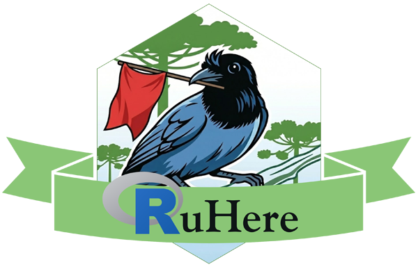

Standardize or fix species names using a dictionary
Source:R/fix_species_names.R
fix_species_names.RdReplaces misspelled, outdated, or unstandardized species names in an occurrence dataset using a user-supplied reference dictionary.
Usage
fix_species_names(
data,
species = "species",
dictionary,
original_name = "input_name",
fixed_name = "Suggested_name",
old_names = FALSE,
flag_col = "fixed_name"
)Arguments
- data
(data.frame or data.table) a dataset containing species names, preferably standardized using
format_columns().- species
(character) the name of the column in
datacontaining the species names to be checked and replaced. Default is"species".- dictionary
(data.frame or data.table) a reference table mapping original names to standardized/corrected names.
- original_name
(character) the name of the column in
dictionarycontaining the original (input) species names. Default is"input_name".- fixed_name
(character) the name of the column in
dictionarycontaining the corrected/suggested species names. Default is"Suggested_name".- old_names
(logical) whether to retain the original species names in a new column named
"old_names"before replacing them. Default isFALSE.- flag_col
(character) the name of the logical column appended to
dataindicating whether each record's species name was modified (TRUE) or kept unchanged (FALSE). Default is"fixed_name".
Value
An object of the same class as data (data.frame or data.table) with
updated species names in the species column, a logical flag column
(flag_col), and optionally an "old_names" column if old_names = TRUE.
Details
The function performs an exact hash-based lookup (match()) between the
species column in data and original_name in dictionary. If dictionary
contains exact duplicate pairs (original_name -> fixed_name), duplicates
are silently collapsed. However, if the same original_name maps to
conflicting values in fixed_name, the function throws an informative error
listing the conflicting names so they can be resolved beforehand.
Records whose names match an entry in dictionary with a valid, non-empty,
and distinct fixed_name are updated in place, and the flag_col column is
set to TRUE. Records with NA in fixed_name or identical matches are
left untouched (FALSE in flag_col).
Examples
# Create a sample occurrence dataset with typos and synonyms
occ <- data.frame(
species = c(
"Araucaria angustifolia",
"Araucaria angustiflia", # typo
"Euterpe edulis",
"Euterpe edullis", # typo
"Cedrela glaziovii", # synonym
"Handroanthus albus" # not in dictionary (kept unchanged)
),
decimalLongitude = c(-49.2, -50.1, -48.5, -47.9, -49.0, -49.3),
decimalLatitude = c(-25.4, -26.2, -25.1, -24.8, -25.6, -16.7),
stringsAsFactors = FALSE
)
# Create a reference dictionary mapping input names to accepted names
dict <- data.frame(
input_name = c(
"Araucaria angustifolia",
"Araucaria angustiflia",
"Euterpe edullis",
"Cedrela glaziovii"
),
Suggested_name = c(
"Araucaria angustifolia", # identical (will not be flagged as changed)
"Araucaria angustifolia", # will be fixed
"Euterpe edulis", # will be fixed
"Cedrela fissilis" # will be fixed
),
stringsAsFactors = FALSE
)
# Fix species names and retain original names for comparison
occ_fixed <- fix_species_names(
data = occ,
species = "species",
dictionary = dict,
old_names = TRUE
)
# Compare original vs. standardized names
occ_fixed[, c("old_names", "species", "fixed_name")]
#> old_names species fixed_name
#> 1 Araucaria angustifolia Araucaria angustifolia FALSE
#> 2 Araucaria angustiflia Araucaria angustifolia TRUE
#> 3 Euterpe edulis Euterpe edulis FALSE
#> 4 Euterpe edullis Euterpe edulis TRUE
#> 5 Cedrela glaziovii Cedrela fissilis TRUE
#> 6 Handroanthus albus Handroanthus albus FALSE